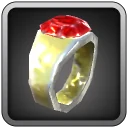

Alliance
Oathbound
A race alliance of 3 units with a step at 2.
Sworn in blood to one another. When an Oathbound unit dies, every other Oathbound unit gains +125 attack damage for the rest of the combat.
Oathbound is a race alliance carried by 3 units. It has one step, reached with 2 different Oathbound units on your board. See How alliances count for how units are counted.
Steps
| Units needed | What it grants |
|---|---|
| 2 | When an Oathbound unit dies, it applies a stack of Oath of Vengeance (+125 attack damage, stacks up to 99 times) to every other allied Oathbound unit for the rest of combat. |
Units (3)
Tier 1: Common (1)
Tier 2: Uncommon (1)
Tier 5: Legendary (1)
Aces
This unit is an ace tied to Oathbound. An ace's extra effect is switched on while the ace is on your board and Oathbound has at least one step active. See Aces. While Oathbound is active, each copy of this ace left in the pool counts 15% heavier when the shop rolls a tier 5 unit, so the ace turns up a little more often.
| Ace | Extra effect |
|---|---|
 Blood Matriarch Blood Matriarch | When this unit dies, it applies Matriarch’s Bequest (+1,000% attack damage) to one random other allied Oathbound unit for the rest of combat. |
Status effects
The steps of this alliance apply these status effects. Each has its own page, and How status effects work explains how they stack and expire.
- Oath of Vengeance: applied with 2 Oathbound units.
Items
| Item | Tier | What it does for this alliance |
|---|---|---|
 Oathbound Insignia | 1 | Counts as 1 extra different Oathbound unit, so every step that needs more than one unit needs 1 unit fewer. It only counts while at least one real Oathbound unit is on your board. |
See Loot and items for how items are found and held.
Pairs well with
Every alliance that shares a unit with Oathbound is listed here. A shared unit counts toward both alliances at once, so fielding it moves both closer to a step. The Alliance matrix shows every overlap.
| Alliance | Kind | Shared units | Its steps | Units in both |
|---|---|---|---|---|
 Arcanist Arcanist | Class | 1 | 3 / 6 |  Oathkeeper Thane Oathkeeper Thane |
 Cutthroat Cutthroat | Class | 1 | 3 / 6 |  Oath Cutter Oath Cutter |
 Duelist Duelist | Class | 1 | 3 / 6 | Blood Matriarch |
 Feral Feral | Race | 1 | 2 / 4 / 6 | Blood Matriarch |
 Ravager Ravager | Class | 1 | 2 / 4 | Oathkeeper Thane |
How it counts
- Only units on your board count. Units on the bench do not.
- Each different unit counts once. Two copies of the same unit count as one, and star level makes no difference.
- Summoned units never count.
- An item that counts as an extra Oathbound unit only counts while at least one Oathbound unit is on your board.
The full rules are on How alliances count.